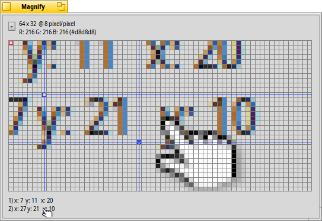

Magnify
Magnify
| Deskbar: | ||
| Posizion: | /boot/system/apps/Magnify | |
| Impostazions: | ~/config/settings/Magnify_prefs |
Magnify al mostre une version slargjade de aree tor ator dal pontadôr dal mouse.
In alt tu cjatarâs la dimension e il nivel di ingrandiment de aree. "64 x 32 @ 8 pixels/pixel" al significhe che tu viodis un retangul di 64x32 pixel tor ator dal pontadôr dal mouse e che ogni pixel al ven ingrandît di 8 voltis.
Sot di chel si à il coôr dal pixel che al ven segnât cuntun contor ros. Il so colôr al ven presentât come RGB e valôrs esadecimâi.
Tu puedis spostâ il ricuadri ros cun ← / → / ↑ / ↓.
Par misurâ lis distancis e inlineâ i ogjets, tu puedis zontâ fin a dôs smiris cun ALT H. In bas a vegnin mostradis lis lôr coordenadis X/Y partint dal angul in alt a çampe e, se dutis dôs a son stadis zontadis, la distance X/Y tra une smire e chê altre.
A puedin ancje jessi spostadis cun ← / → / ↑ / ↓. La smire ative e ven segnade cuntune "x".
Tu puedis spostâ il pondadôr dal mouse pixel par pixel cun ALT ← / → / ↑ / ↓.
Fasint clic sul menù a tende o fasint clic diestri su la gridele dai pixel ti darà diviersis opzions:
| ALT S | Al salve la visualizazion atuâl come imagjin PNG. | ||
| ALT C | Al copie la visualizazion atuâl intes notis. | ||
| ALT T | Al mostre lis informazions adizionâls. | ||
| ALT H | Al zonte une crôs di smire che tu puedis strissinâ ator. | ||
| ALT MAIUSC H | Al gjave la ultime crôs di smire zontade. | ||
| ALT G | Al mostre une gridele in soreimpression. | ||
| ALT F | Al ferme di inzornâ la aree di ingrandiment. | ||
| ALT I | Al continue a inzornâ la aree di ingrandiment, ma nol va plui daûr dal pontadôr dal mouse. | ||
| ALT / | Dopo che si à ridimensionât il barcon, al torne a fâ deventâ cuadrade la visualizazion. | ||
| ALT - | Al strenç la aree di ingrandiment ator dal pontadôr dal mouse. | ||
| ALT + | Al slargje la aree di ingrandiment ator dal pontadôr dal mouse. | ||
| ALT , | Diminuìs l'ingrandiment. | ||
| ALT . | Aumente l'ingrandiment. |